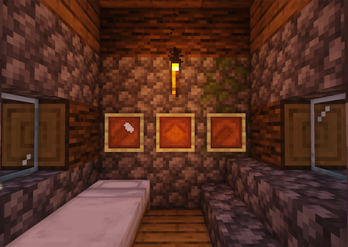
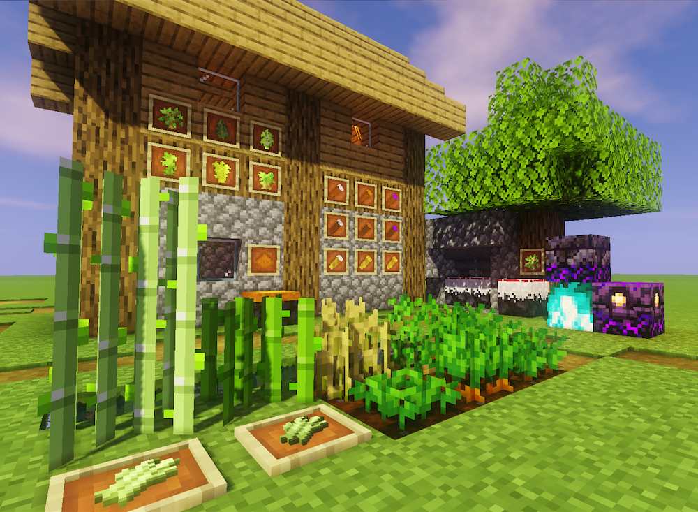

地瓜
本模组的核心类食物作物，分为紫薯、红薯和白薯，并可加工为地瓜粉、地瓜皮等三个延伸变种。
把农业和魔法接在一起的 Minecraft Fabric 模组。与 @teddyxlandlee 及 Featurehouse 团队协作开发，围绕地瓜这一核心作物延伸出种植、研磨加工、魔法锅转换与附魔树等整套玩法，加入了农林台、研磨器、魔法锅与多种附魔作物。

原版 Minecraft 的农业大多止步于收获与简单食用。Sweet Potato Mod 为作物补全了一条从种植到加工、附魔与转换的后续链路。
以地瓜为中心区分紫薯、红薯与白薯三个品类，进一步衍生出地瓜粉、地瓜皮等中间材料，让农场收获物成为后续合成的起点。
研磨器负责把地瓜细磨为地瓜粉；在魔法锅下方 3×3 区域点燃灵魂火将其激活后，即可把三个任意品类的生地瓜转换为其他品类，或赋予随机附魔特性。
包含四种新增方块（魔法锅、研磨器、农林台与附魔树叶）、五种新增物品（地瓜、地瓜粉、地瓜皮、附魔树苗与附魔作物）以及一种自然生成结构「附魔树」，当前版本 1.5.1，历代改动均记录于团队 Wiki。
基于 Minecraft Fabric 与 Java 构建，作物行为、方块逻辑与合成表由代码与数据包共同定义；可在 Featurehouse 下载页获取安装包并在团队 Wiki 查阅细节。
以下四类要素构成了模组中最主要的种植、磨粉与附魔循环，标题可直接跳转至对应的 Wiki 说明页。
由 Featurehouse 团队协作维护与更新的开源模组项目。